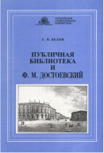
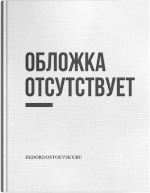
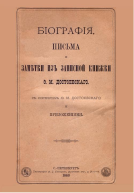
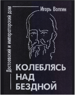
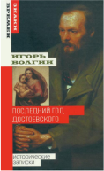
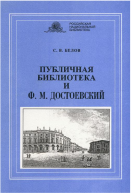
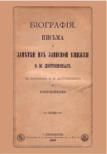

Биография

Публичная библиотека и Ф.М. Достоевский (2003)

«Кузнецкий венец» Федора Достоевского в его романах, письмах и библиографических источниках минувшего века.

Биография, письма и заметки из записной книжки Ф.М. Достоевского (1883)

Колеблясь над бездной. Достоевский и русский императорский дом (1998)

Последний год Достоевского (4-е изд.) (2010)

Последний год Достоевского (4-е изд.) (2010)

Публичная библиотека и Ф.М. Достоевский (2003)

Библиотека Ф.М. Достоевского (2005)

Биография, письма и заметки из записной книжки Ф.М. Достоевского (1883)